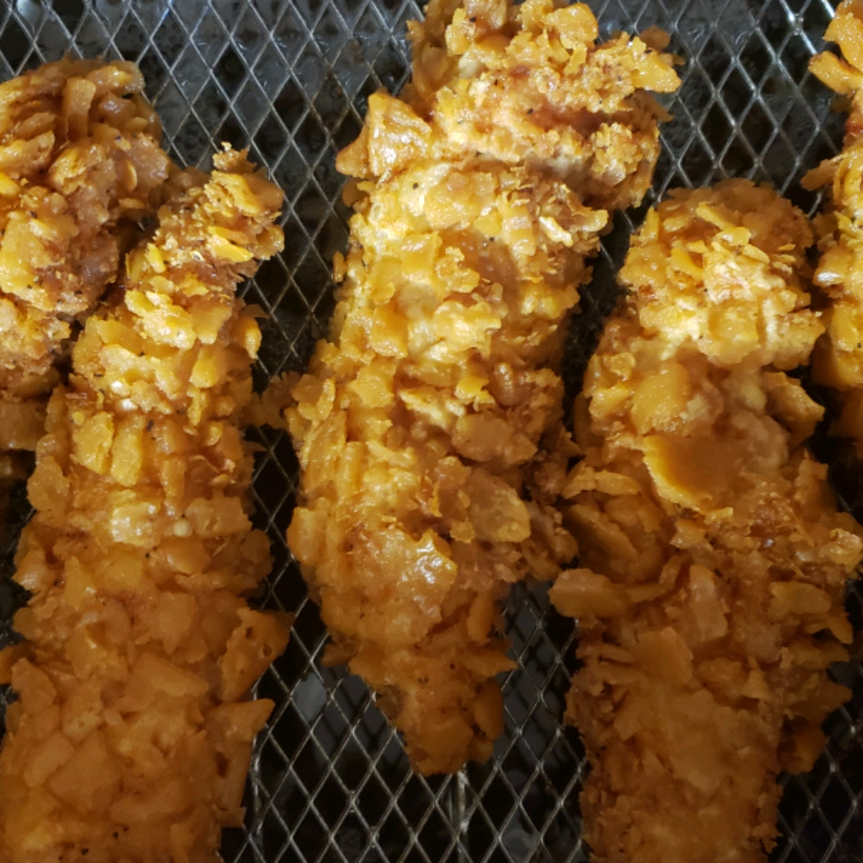

Fried chicken

These pan-fried chicken tenders are easy to make, crunchy, and finger-lickin' good! Great with honey mustard sauce.
Wonderful chicken recipe with crackers.
This flour egg recipe is easy to make.
Ingredients
- 1 egg
- 1 teaspoon seasoned salt
- 3 skinless boneless chicken
Steps
- Place crackers in a resealable plastic bag; crush into coarse crumbs. Mix cracker crumbs, potato flakes, seasoned salt, and black pepper together in a shallow bowl. Beat egg in a separate small bowl. Place flour in a third shallow bowl.
- Coat chicken pieces in flour, beaten egg, and cracker mixture, respectively.
- Heat vegetable oil in a large skillet over medium heat. Pan-fry chicken strips until no longer pink in the center and coating is golden brown, 15 to 20 minutes.